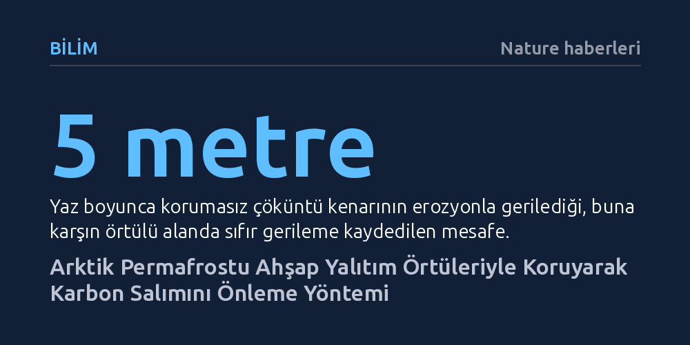

BILIM · Nature haberleri · 2026-10-09
Kanadalı bir girişim, eriyen Arktik permafrost tabakasını ahşap talaşı ve hindistan cevizi lifinden örtülerle yalıtarak toprak erozyonunu ve sera gazı salımını durdurmayı başardı. İlk saha testinde örtülü alandaki gerileme sıfıra indirildi.
Permafrost erimesinin durdurulamaz bir küresel kader olmadığını, kritik erozyon noktalarına yapılacak yerel yalıtım müdahaleleriyle devasa karbon salımlarının doğrudan engellenebileceğini gösteriyor.

Gezegen genelinde yükselen sıcaklıklar, binlerce yıldır donmuş halde kalan Arktik topraklarını hızla çözüyor. Permafrost olarak adlandırılan bu donmuş zemin tabakası, çürüyemeden buz içinde hapsolmuş muazzam miktarda tarih öncesi organik madde barındırıyor. Küresel ısınmanın etkisiyle don çözüldüğünde, bu maddeler mikroorganizmalar tarafından parçalanıyor ve atmosfere karbondioksit ile metan gazı yayılmaya başlıyor. Tahminler, çözülen bu topraklardan atmosfere karışan sera gazı miktarının Japonya gibi büyük bir sanayi ülkesinin yıllık toplam salımına ulaştığını gösteriyor.
Bu erime sürecini daha da tehlikeli kılan etken ise arazide açılan ani erozyon yaraları. Kutup tepelerindeki permafrost eridiğinde yamaçlar çöküyor ve gerileyen erime çöküntüsü adı verilen devasa çukurlar oluşuyor. Toprak yüzeyinden kopan parçalar, daha derinde yatan donmuş tabakaları doğrudan sıcak havaya maruz bırakıyor. Bu durum, yoğun sera gazı fışkırtan sıcak erozyon odakları meydana getiriyor. Yapılan modellemeler, yalnızca kademeli erimeyi hesaba katan tahminlere kıyasla, bu hızlı çöküntülerin permafrost kaynaklı emisyonları yüzde 40'a varan oranda artırabileceğini ortaya koyuyor.
Bugüne dek permafrostun çözülmesini yavaşlatmanın tek güvenilir yolunun küresel ölçekte fosil yakıt emisyonlarını kısmak olduğu kabul ediliyordu. Buzulların üstüne yansıtıcı örtüler sermek ya da deniz buzunu kalınlaştırmak için üzerine su pompalamak gibi bazı jeomühendislik fikirleri tartışılsa da doğrudan donmuş toprağın erimesini yerinde engellemeye odaklanan somut bir girişim bulunmuyordu. Kanadalı bir girişim olan PermaC, tam bu noktada çöküntüleri fiziksel olarak yalıtıp sabitleyecek bir yöntem geliştirdi.
Girişimin kurucu ortağı ve British Columbia Üniversitesi araştırmacısı Cansu Çulha, bu fikri Alaska'daki yerli toplulukların uygulamalarından ilham alarak geliştirdi. Bölgedeki yerliler, çöküntü kenarlarına ağaç dikerek toprağın çözülmesini ve gerilemesini yavaşlatıyordu. PermaC ekibi bu yaklaşımı endüstriyel bir yalıtım sistemine dönüştürdü: Çöküntü kenarları ahşap talaşı, toprak ve yerel tohum karışımıyla kaplanıyor, ardından üzeri hindistan cevizi liflerinden dokunmuş organik bir örtüyle sarılıyor. Ilıman iklimlerde erozyon kontrolü amacıyla kullanılan bu tür biyolojik örtüler, tarihte ilk kez Arktik'in donmuş topraklarını korumak amacıyla sahaya sürülüyor.
Şirket, geliştirdiği yalıtım örtülerinin ilk saha testini Kanada'nın Kuzeybatı Toprakları bölgesinde, hızla erozyona uğrayan aktif bir çöküntü alanında tamamladı. Kutup yazının yüksek sıcaklıkları boyunca takip edilen deney sahasında örtünün serildiği hat ile çıplak bırakılan yamaç karşılaştırıldı. Girişimin kurucu ortağı Cansu Çulha hedeflerini, "Amacımız topraktaki karbonun gömülü kalmasını sağlamak" sözleriyle özetliyor.
İlk yaz sezonunun sonunda elde edilen gözlemler belirgin bir fark ortaya koydu. Örtüsüz bırakılan çöküntü kenarı yaz boyunca erozyon nedeniyle 5 metre kadar içeriye doğru gerilerken, yalıtım örtüsüyle korunan bölgede ölçülebilir hiçbir gerileme yaşanmadı. Projeye danışmanlık yapan Woodwell İklim Araştırma Merkezi'nden permafrost uzmanı Christina Schaedel bu sonucu umut verici olarak nitelendiriyor; ancak verinin henüz tek bir çöküntüde ve tek bir yaz boyunca elde edildiğinin altını çiziyor.
Yöntemin sahada erozyonu durdurduğu görülse de önlenen emisyon miktarını kesin olarak hesaplamak ciddi bilimsel zorluklar barındırıyor. Illinois Üniversitesi'nden permafrost biyoloğu Mark Lara, bu tür çöküntülerin atmosfere yoğun karbon püskürttüğünün kesin olduğunu, ancak kesin rakamları belirlemenin son derece karmaşık detaylara bağlı olduğunu vurguluyor. Salınan gazın miktarı; çöküntünün geometrisine, topraktaki karbon yoğunluğuna ve erozyon sonrası açığa çıkan karbonun karbondioksit mi yoksa çok daha etkili bir sera gazı olan metan mı olarak salınacağına göre bütünüyle değişiyor.
Tüm bu belirsizliklere rağmen PermaC, Arktik'teki mevcut toprak ve erozyon verilerine dayanarak karbon zengini ortalama bir çöküntüde yılda yaklaşık 2.200 ton karbondioksit salımının önlenebileceğini öngörüyor. Şirketin on yıllık hedefi, Kanada ve Alaska genelinde 20 bin çöküntüyü bu örtülerle kaplamak. Bu hedef gerçekleşirse, Macaristan'ın yıllık toplam emisyonuna denk gelen yaklaşık 40 milyon ton karbondioksitin atmosfere karışması engellenebilir. Girişim, bağımsız denetçiler tarafından onaylanacak bir ölçüm metodolojisi geliştirerek önlenen bu emisyonları önümüzdeki yıldan itibaren karbon kredisi olarak satmayı ve yatırımcılardan şimdiden topladığı 1,4 milyon Kanada dolarını büyütmeyi planlıyor.